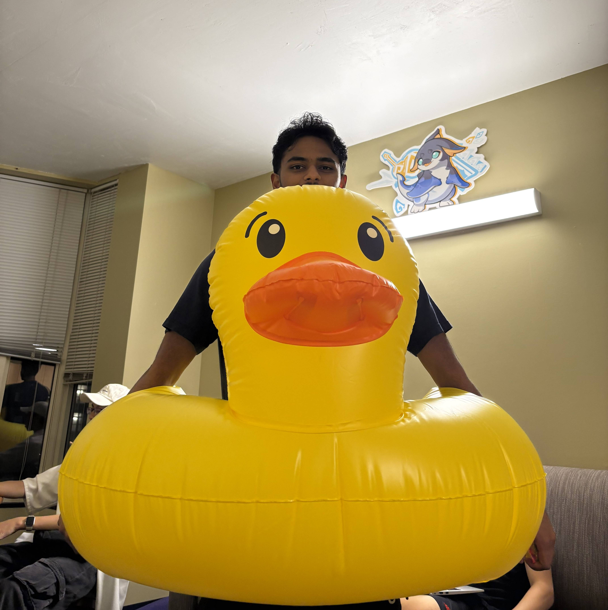
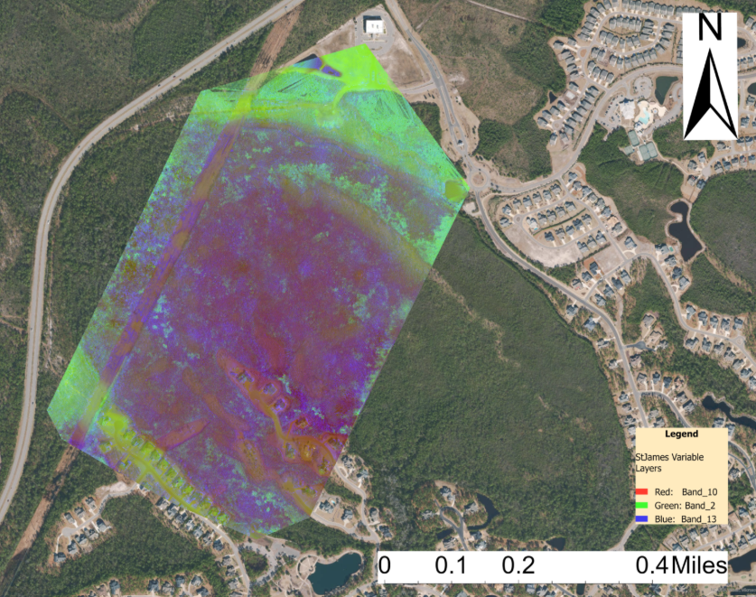
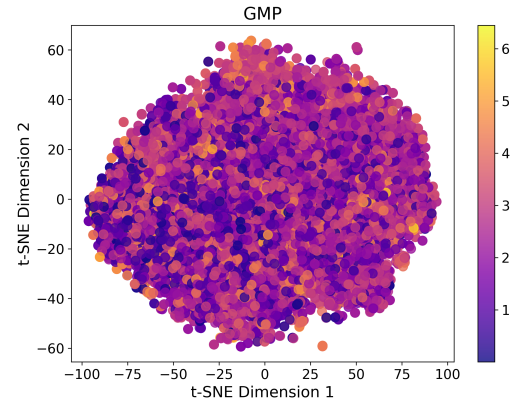
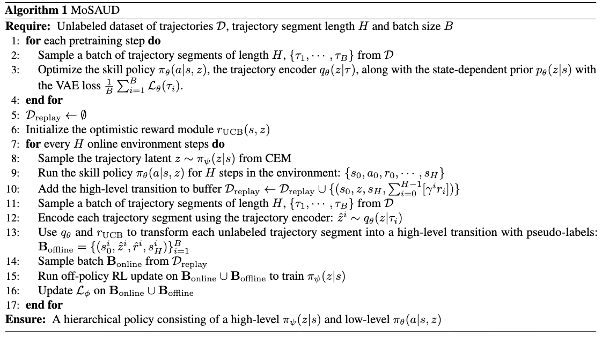

|
Shitij Govil Hi! I'm a second year Computer Science undergraduate student at Georgia Tech, where I've been fortunate to work with Prof. Pan Li and Prof. Animesh Garg. My recent works spans diffusion-based world models, mechanistic interpretability, and ML for science (currently physics). My research goal is to create sample-efficient and interpretable models that provide actionable insights in many domains (like language, planning, science etc.) |
 |
ResearchMy research focuses on developing sample-efficient and interpretable machine learning models. I'm particularly interested in diffusion-based world models and mechanistic interpretability. |
|  |
Using Hyperspatial LiDAR and Multispectral Imaging to Identify Coastal Wetlands Using Gradient Boosting Methods
Remote Sensing, 2022 code / paper Shitij Govil, Aidan J. Lee, Aiden C. MacQueen, Narcisa G. Pricope, Asami Minei, Cuixian Chen Developed a novel approach combining hyperspatial LiDAR and multispectral imaging data with gradient boosting methods to accurately identify and classify coastal wetlands. |
|  |
MatDeepLearn: A Deep Learning Framework for Materials Science
arXiv, 2024 code / paper Shuyi Jia, Shitij Govil, Manav Ramaprasad, Victor Fung Pre-training GNNs for materials science using cheaply-computed structural fingerprints. |
Projects |
|  |
Efficient Skill-based Reinforcement Learning
Course Project CS 8803 DRL project page A model-based RL framework that extracts reusable skills from rewardless offline data and reuses the data by relabeling with an optimistic reward estimator for efficient exploration through the learned dynamics model |

|
Winner-Take-All Sparse Autoencoders
Course Project CS 7461 DL project page A winner-take-all sparsity mechanism for sparse autoencoders in the context of mechanistic interpretability. Investigates feature-wise sparsity constraints for SAEs to prevent dead features. |
|
Template from Jon Barron. |